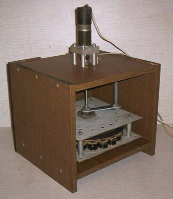
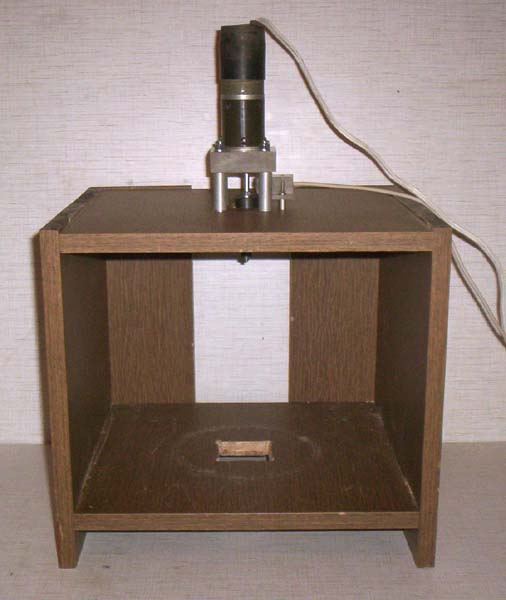
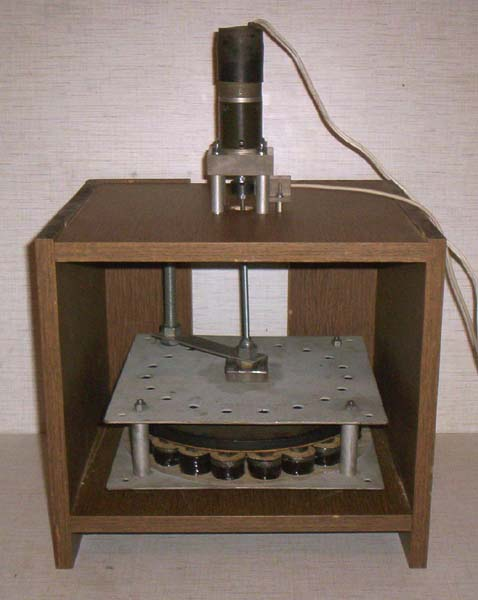
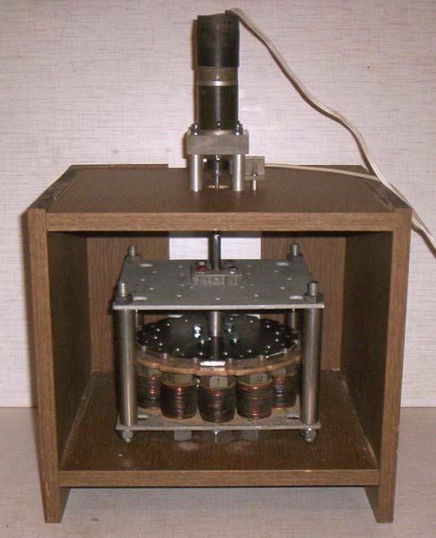
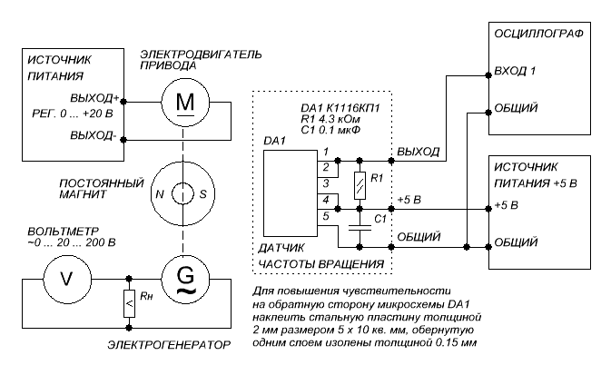
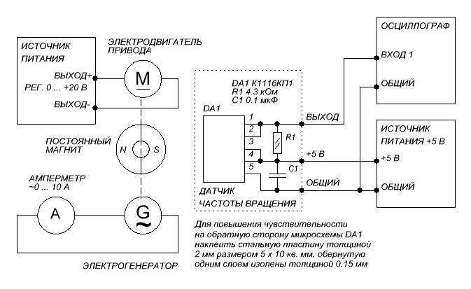
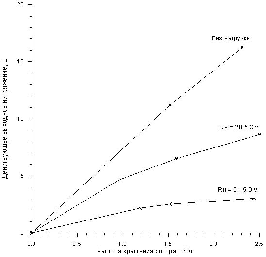

Малогабаритный настольный стенд для испытаний маломощных низкооборотных электрогенераторов

1. Введение
Малогабаритный настольный стенд для испытаний маломощных низкооборотных электрогенераторов [1, 4 - 6] сконструирован в продолжение исследовательских работ по направлению "Альтернативные источники энергии", а также в целях опробования концепции использования специализированного оборудования на основе уже имеющихся технологических решений при проведении испытаний электрогенераторов с вращающимся ротором.
2. Конструкция стенда
Малогабаритный настольный стенд для испытаний маломощных низкооборотных электрогенераторов представляет собой станину, собранную из древесно-стружечных плит (ДСП), на которой установлен электропривод вращения с датчиком частоты вращения [2]. Электропривод представляет из себя электродвигатель постоянного тока с редуктором. Частота вращения электродвигателя привода может изменяться посредством регулировки питающего постоянного напряжения. В днище стенда вырезано квадратное отверстие для удобства установки электрогенераторов с выступающими фланцами подшипников и осями. Внешний вид стенда показан на рис. 2.1.

Рис. 2.1. Внешний вид малогабаритного настольного стенда для испытаний маломощных низкооборотных электрогенераторов.
Испытываемый электрогенератор устанавливается и закрепляется во внутреннем отсеке стенда (рис. 2.2, 2.3). Ось электрогенератора соединяется с осью электропривода с помощью оси-насадки требуемой длины с гайками и контргайками.

Рис. 2.2. Малогабаритный настольный стенд для испытаний маломощных низкооборотных электрогенераторов с установленным во внутреннем отсеке однофазным генератором с дисковым ротором на постоянных магнитах [5].

Рис. 2.3. Малогабаритный настольный стенд для испытаний маломощных низкооборотных электрогенераторов с установленным во внутреннем отсеке трехфазным генератором с дисковым ротором на постоянных магнитах [6].
3. Технические характеристики стенда
4. Испытание электрогенераторов на стенде
Возможный вариант подключения оборудования при работе испытательного стенда показан на рис. 4.1. К обмоткам проверяемого электрогенератора присоединяется вольтметр с требуемым диапазоном измерения и при необходимости сопротивление нагрузки Rн (при проведении испытаний на холостом ходу сопротивление нагрузки Rн не подключается). Электродвигатель привода стенда запитывается от источника регулируемого постоянного напряжения [3]. Магнитный датчик частоты вращения [2] подключается к источнику постоянного напряжения +5 В и осциллографу, который служит для измерения частоты (или периода) вращения ротора электрогенератора. При проведении испытаний ротор электрогенератора приводится во вращение с помощью электропривода стенда. Далее можно найти, например, зависимость выходного напряжения электрогенератора от частоты вращения его ротора на холостом ходу и при различной нагрузке. На рис. 4.3 показана такая зависимость для однофазного низкооборотного электрогенератора с дисковым ротором на постоянных магнитах [5]. Если вольтметр в схеме рис. 4.1 заменить амперметром (рис. 4.2), то можно построить зависимость выходного тока электрогенератора от частоты вращения ротора в режиме короткого замыкания. На рис. 4.4 показана зависимость тока короткого замыкания от частоты вращения ротора для трехфазного низкооборотного электрогенератора [6].

Рис. 4.1. Схема для измерения зависимости выходного напряжения электрогенератора от частоты вращения ротора при разных нагрузках.

Рис. 4.2. Схема для измерения зависимости выходного тока электрогенератора от частоты вращения ротора в режиме короткого замыкания.

Рис. 4.3. Зависимость действующего выходного напряжения однофазного электрогенератора с дисковым ротором на постоянных магнитах [5] от частоты вращения ротора при разной нагрузке.
Рис. 4.4. Зависимость действующего значения тока короткого замыкания от частоты вращения ротора трехфазного электрогенератора [6] (обмотки генератора соединены звездой и подключены к трехфазному мостовому диодному выпрямителю, ток короткого замыкания измеряется амперметром постоянного тока, подключенного к выходу выпрямителя).
5. Состояние разработки
Стенд используется для оперативной проверки и испытаний электрогенераторов с вращающимся ротором для снятия зависимости выходных параметров (напряжение, ток) от частоты вращения на холостом ходу или с подключенной нагрузкой. В дальнейшем планируется дооснастить стенд испытательным оборудованием, а также опробовать электроприводы с более высокой частотой вращения.
Ссылки:
11.12.2018
12.12.2018
Альтернативные источники энергии
Компьютеры и
Интернет
Магнитные поля
Механотронные системы
Перспективные
разработки
Электроника и
технология